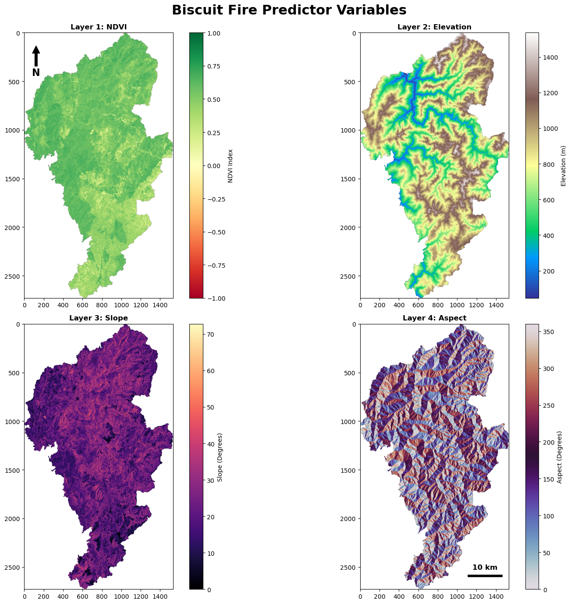
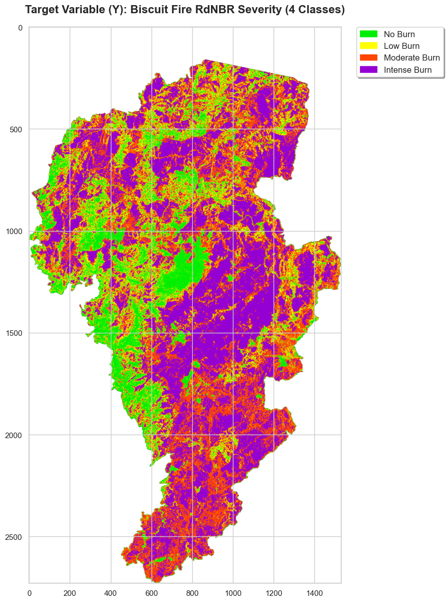
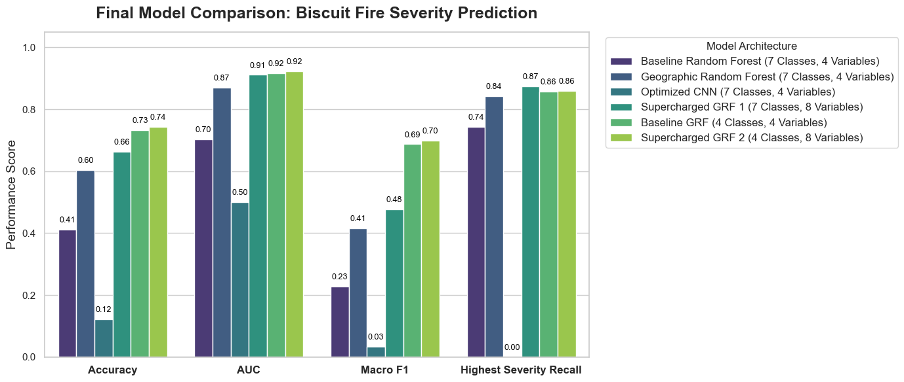
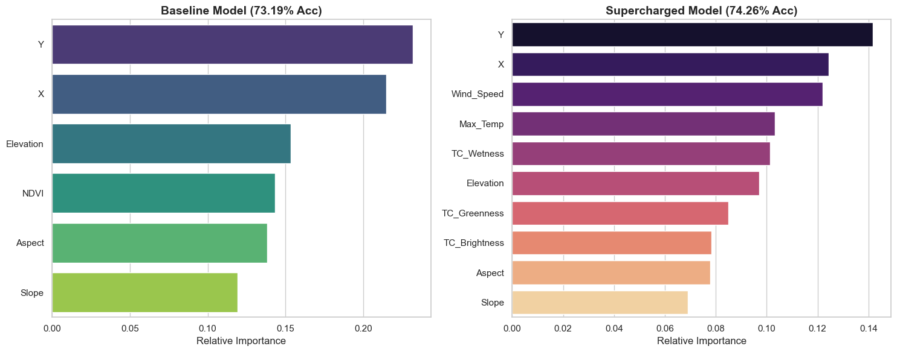

Predicting Wildfire Burn Severity Using Machine Learning
Skills & Concepts Demonstrated
- Successfully apply spatial analytical methods, including machine learning: Trained and evaluated multiple machine learning models, ultimately utilizing Geographic Random Forest (GRF) to classify and predict burn severity.
- Understand how to manipulate and process spatial data: Extracted and processed elevation, slope, and aspect topographic variables from DEMs to use as model predictors.
- Process remotely sensed imagery to address environmental questions: Calculated pre-fire NDVI from Landsat imagery and reclassified dNBR target variables using a 4-class classification system.
Programs Used & Data Sources
- Programs Used: Python & Visual Studio Code.
- Data Sources: Landsat imagery (via EarthExplorer), historical wildfire perimeters and dNBR rasters (via MTBS), and 30-meter Digital Elevation Models (via OpenTopography).
Project Summary
As the western United States faces a higher quantity and severity of wildfires due to a changing climate, land managers and emergency response teams need better tools to predict where a fire will have its most devastating impacts. A reliable prediction model helps allocate critical time and resources effectively. This study focuses on the historic 2002 Biscuit Fire in southern Oregon and northern California, which burned nearly half a million acres across a highly diverse topographic landscape.
The goal of this project was to test multiple machine learning model types to find the most effective combination of predictor variables (topography and fuel load) for classifying burn severity. Using Landsat imagery to derive NDVI (as a proxy for vegetation/fuel) and DEMs to derive slope, aspect, and elevation, these inputs were mapped against known burn severities (dNBR) from the MTBS dataset. By iterating through various models, the study demonstrates how advanced spatial algorithms, particularly Geographic Random Forest models, significantly improve classification accuracy for complex environmental phenomena.
Key Figures & Analysis



